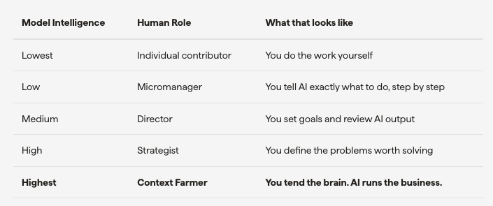
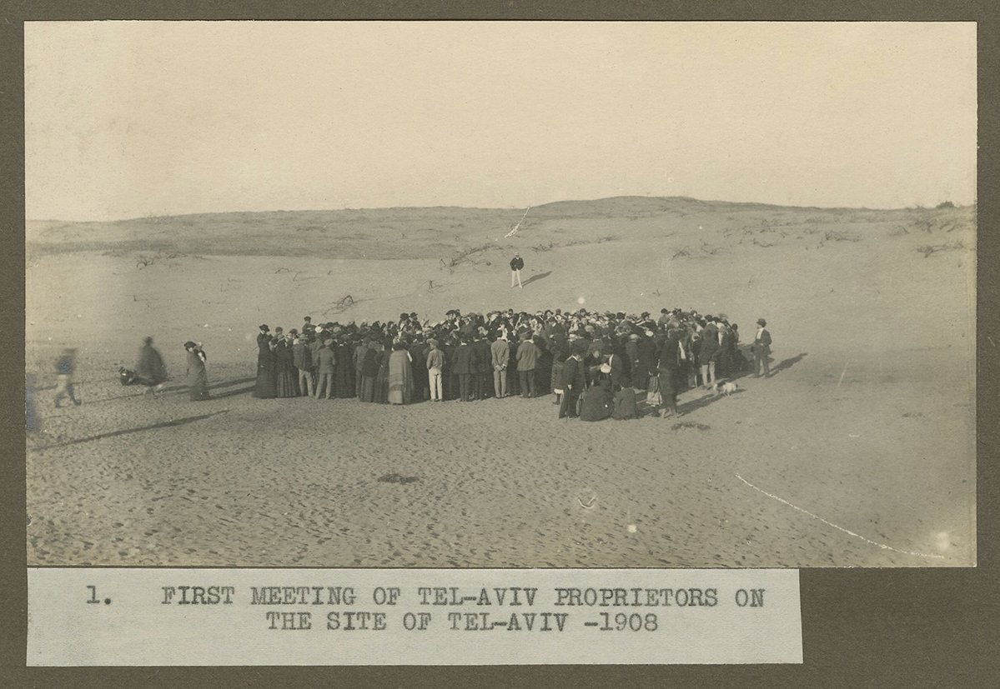
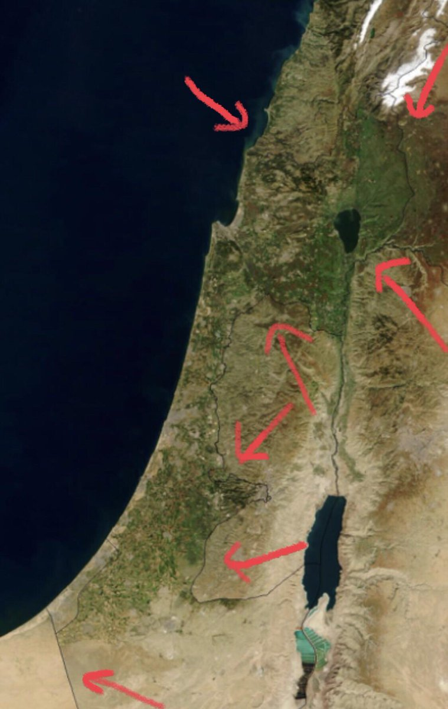
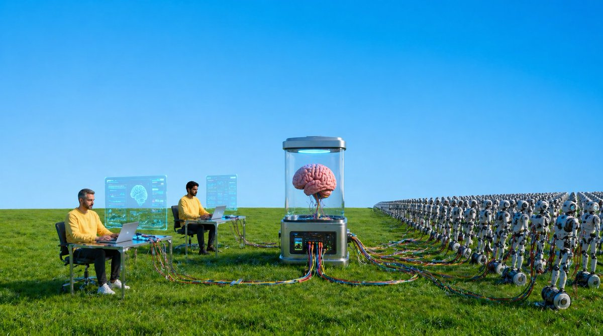
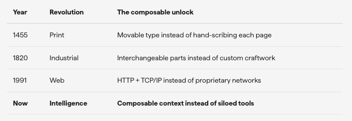

Trillions of dollars of value is going to be created over the next 5 years by a new kind of company with a new kind of job for everyone that works there. Over the next 20 years, it will be the only kind of company and the only job any human can have. There are only a handful of these companies today. I had dinner with some of their founders a few weeks ago. Between courses, one founder shared what he'd told his team at a recent all-hands. It perfectly captures what's happening: You aren't smarter than AI anymore. What that means is your job is no longer to do the work or even make decisions. Your job is to give the AI as much context as possible so it can make the decisions and do the work.
Surprisingly, about half the table had come to the same conclusion and restructured their entire companies around it. Everyone had built what they called a "company brain," a single place aggregating all their context so agents have everything they needed to run their businesses. This structure produced incredible results. All of them were operating at a mind-boggling speed and scale: zero to tens of millions in revenue, in months, with tiny teams. Classic startup wisdom says that you can see the future by looking at how brilliant technical people on the fringes of society spend their time. I certainly saw the future at that dinner.
The Agentic Micro Company
The writing has been on the walls for our 2,000-year-old model of company-building. As Jack Dorsey and Sequoia's Roelof Botha pointed out in their recent essay, From Hierarchy to Intelligence, the dominant corporate structure with massive, specialized teams and layers of management was popularized by the Romans to disseminate information in a world constrained by the limitations of the human mind. But now that we have digital minds that can house massive amounts of context and execute a wide range of tasks, this model just slows things down and falls apart. Dorsey later announced a 40% layoff and restructuring of Block into tiny teams using agents to handle massive scope. It's the same exact model the founders I met at dinner had.
I call these "Agentic Micro Companies (AMCs)": Tiny teams of generalist human "player-coaches" Tons of agents executing the majority of the work Custom software to automate and monitor the business Powered by a Company Brain that serves as both context for the agents and a backend for the software
AMCs are the ideal structure for the 1-person billion dollar enterprises of the future because they are optimized for speed. As Brian Chesky's Founder Mode teaches, whatever a founder focuses on will improve dramatically over time. AMCs simply make everyone at a company a founder and expand the number of things they can focus on. The most critical element of AMCs is the Company Brain.
The Company Brain
Context is king, but for the most part, the emperor has had no clothes. As has been proven in countless studies, even small models outperform larger models when they have better context. The more emails, meeting notes, and documents you feed an agent, the more powerful it becomes. We've seen this ourselves. The Micro agent outperforms every other agent we tested (including fully loaded Claude Code, Codex, OpenClaw, & Hermes agents) for most queries, simply because it has an advanced system for storing and retrieving memory. Building the world's best agent memory sounds impressive. Honestly, the bar has been pretty low. Today's agents are basically quantum physics PhDs with severe amnesia.
It wasn't until Karpathy's viral post on knowledge graphs on April 2nd that the industry truly woke up to the importance of unified memory systems, or "brains" as some are calling them. The open source ecosystem has exploded with different approaches like Garry Tan's GBrain, but at the end of the day, the best ones ultimately all approximate the functions of the human brain: long term memory, episodic, short term, etc. AMCs deploy a single brain for their entire company that can be used as a backend for custom software they build, for quickly looking up information, and to be the hive mind for hundreds of agents that run their businesses every day.
The Context Farmer
As model intelligence expands, the role of the human contracts.

The final job humans will have is Context Farmer. Farmers don't produce fruit. Plants do. Farmers make the conditions right: crop rotation, water, sunlight. They facilitate. They tend. They stay out of the way. Context Farmers do the same in the new world of AMCs running on Company Brains. They monitor context quality and decay. They add context from the physical world only humans can access. All with the objective of feeding the Company Brain so the fruits of their business can grow. It's what great executives already do with high-performing teams. As the saying goes: hire great people and get out of their way. The people I know doing this well have ample free time. They take open-ended meetings.
They collect new ideas and feed them back to their teams. They're not busy. They're farming.
The Trillion-dollar Terraform Project
The biggest challenge for Context Farmers today is the same one farmers faced in the region that would become Tel Aviv in the early 1900s: starting from nothing.

The land was a barren desert. No water, no fertile soil. If you wanted to grow anything, you'd have to figure out irrigation, fertilization, and everything else yourself. This is exactly what context farming is like today. To collect, monitor, and improve context for a brain, people are on their own: setting up databases, ingestion pipelines, and other systems from scratch. There are plenty of open-source tools, but the ecosystem is still early enough that they tend to fall quite short. Back to Tel Aviv. 100 years later, it's been completely terraformed. Israelis invented drip irrigation and a handful of other technologies that turned the country so green you can see the difference between it and its neighbors from space.

The invention that changed everything wasn't a better plant; it was better infrastructure that benefited the entire farming industry. This is the trillion-dollar opportunity of our lifetimes: terraforming the context layer by making personal and global context accessible to all. We need to evolve beyond MD files on our computers. Beyond company brains hosted in the cloud. To truly unleash the Intelligence Revolution, empower agents to achieve their full potential, and birth millions of Agentic Micro Companies, we need a singular global brain that serves the entire ecosystem. This has been attempted by virtually every massive company: Google organized the world's websites. Meta organized the world's people.

LinkedIn organized the world's professionals. Salesforce organized the world's deals. But all of them fall short because they are siloed and idiosyncratic. Hand-crafted for their singular use cases. They are not composable. Composability, or the ability to combine independent parts into new systems, is crucial because it has been the catalyst for virtually every technological revolution in history.

The Intelligence Revolution will be catalyzed not by intelligence itself, but by composable context. A global brain powering millions of AMCs and trillions of agents. With such a system, any information, software, or business outcome is a prompt away. Like farmers in the most fertile ecosystems, their role is merely sowing seeds and letting things grow. This the last job for mankind: Context Farming. Happy harvest!